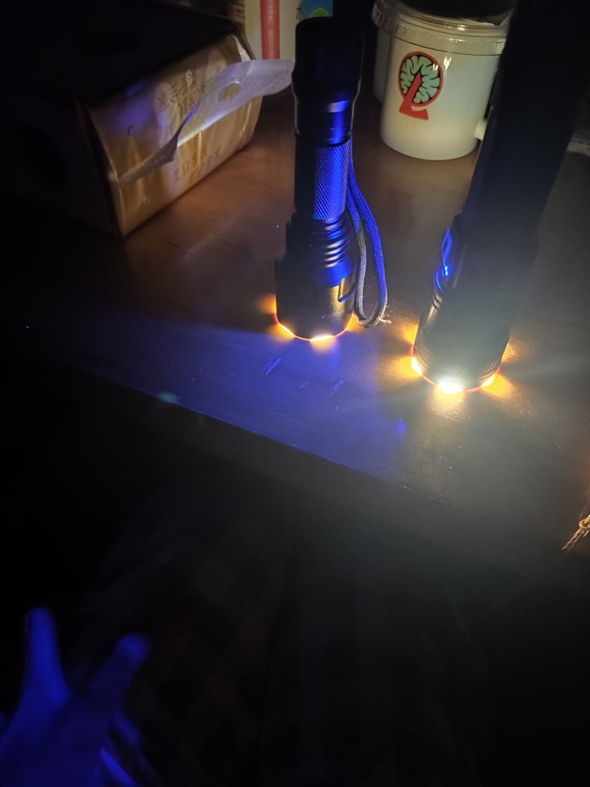
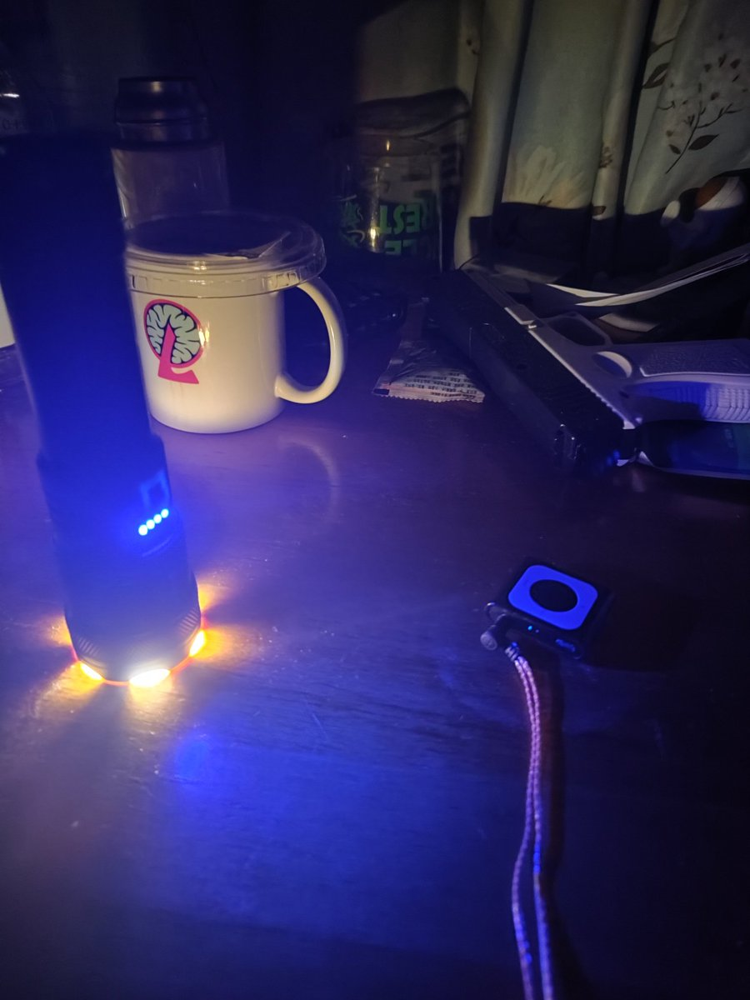
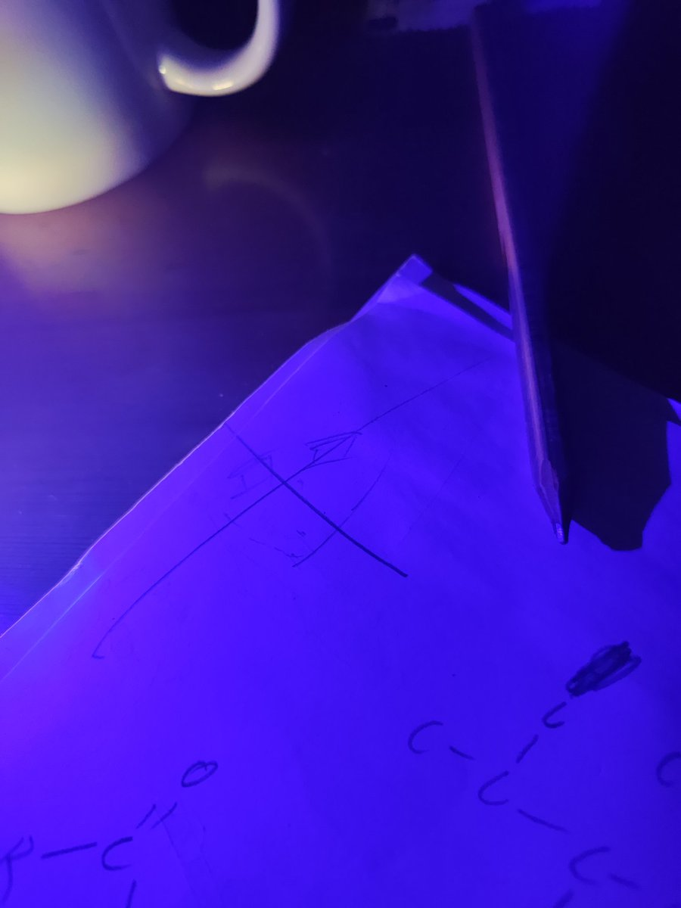

吞一口水 苦涩的甜蜜便在我的舌根晕染
后来变得上课吃 社交前吃 白天因为不高于15t的铁律所以几乎没被发现过 同学感受到异常 我就说生病了头晕 只不过有点频繁
两个月后 期中考 最引以为傲的生物首次拿了B+ 不仅被抢走了年一还被嘲讽 我的品与学更烂了 开始逃课 每当体育课就去空教室开始磕鸡刚晚安

后来变得上课吃 社交前吃 白天因为不高于15t的铁律所以几乎没被发现过 同学感受到异常 我就说生病了头晕 只不过有点频繁
两个月后 期中考 最引以为傲的生物首次拿了B+ 不仅被抢走了年一还被嘲讽 我的品与学更烂了 开始逃课 每当体育课就去空教室开始磕鸡刚晚安



汇总昨晚失去意识前想发但没发的话
"呃呃用哪个手电筒比较好呢？
好像右边那个的指示蓝光就够了！"
"突然好想画画！
但画了两笔发现自己根本没学过
就释怀地放弃了！"
"回来了..一切都回来了..又想起了之前早已被我遗忘 随意使用物质的时光 那时候 我品学兼差 每到晚上回寝 就偷偷剥开一板玉米当安眠药 https://t.co/DxVnrpC2ao
"呃呃用哪个手电筒比较好呢？
好像右边那个的指示蓝光就够了！"
"突然好想画画！
但画了两笔发现自己根本没学过
就释怀地放弃了！"
"回来了..一切都回来了..又想起了之前早已被我遗忘 随意使用物质的时光 那时候 我品学兼差 每到晚上回寝 就偷偷剥开一板玉米当安眠药 https://t.co/DxVnrpC2ao